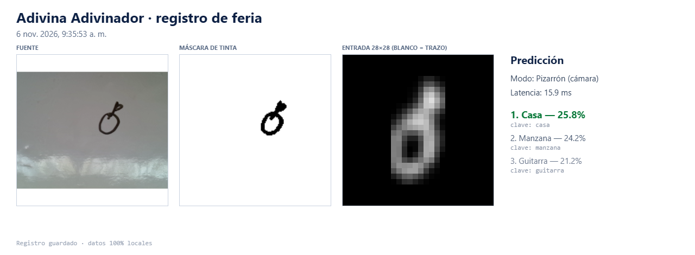

XXVI Encuentro con la Física, Química, Matemática y Biología
Adivina Adivinador
El ojo de la máquina · Registro de feria 2026
Un modelo de inteligencia artificial entrenado para reconocer 24 categorías de garabatos. Durante el encuentro, personas desde los 6 años dibujaron en vivo y cada resultado quedó guardado en esta bitácora.
- Registros reales
- 137
- Categorías
- 24
- Edades
- 6+
- Privacidad
- 100% local

01 / El experimento
Ciencia que se puede garabatear.
Adivina Adivinador nació como una pregunta sencilla: ¿puede una máquina aprender a reconocer lo que dibuja una persona?
Entrenamos un modelo de visión con 24 categorías de objetos cotidianos: una casa, un sol, un árbol, un gato, una montaña. En la feria, el público dibujó con rotulador sobre una pizarra frente a la webcam. La aplicación procesó cada trazo y respondió con sus tres predicciones más probables.
Cada vez que aparecía un resultado, pulsábamos G para guardar una ficha PNG con el trazo original, la máscara de tinta, la entrada real de 28×28 píxeles y el top-3. Lo que ves aquí es ese archivo, sin retoques: aciertos, dudas y dibujos que hicieron reír a todos.
“La IA no siempre acierta. Y eso también es parte del experimento.”
02 / El proceso
Del garabato a la predicción.
Cuatro pasos ocurren en milisegundos, directamente en el navegador.
-
01
Dibujas
Con un rotulador negro sobre una pizarra frente a la webcam.
-
02
Se limpia el trazo
La app recorta el dibujo, lo centra y lo reduce a una matriz de 28×28 en grises.
-
03
La red opina
Una red neuronal convolucional compara el patrón con las 24 clases que aprendió.
-
04
Top-3
Se muestran las tres respuestas más probables con su porcentaje de confianza.
En cada ficha de la galería, el tercer panel es la imagen real que vio el modelo: blanco representa el trazo. El cuarto bloque muestra el top-3 que apareció en pantalla.
03 / El vocabulario
24 clases, un solo pizarrón.
Toca una categoría para ver solo los registros en los que la IA la eligió como respuesta principal.
04 / Archivo de feria
Los dibujos que alimentaron al ojo.
Capturas generadas en vivo con la tecla G. Sin filtros, sin retoques. Cada tarjeta se agrupa por la predicción número 1 de la IA.
137 registros
Sin registros para esta búsqueda.
Prueba con otra categoría o borra el texto del buscador.
Mostrando 0 de 137 registros · página 1 de 1
05 / Ficha técnica
Bajo el capó.
- Modelo
- CNN de visión · Keras / TensorFlow exportado a TensorFlow.js
- Entrada
- 28 × 28 × 1 · 784 valores en escala de grises, normalizados a [0, 1]
- Salida
- 24 clases · top-3 con porcentaje de confianza
- Preprocesamiento
- Recorte al bounding box del trazo, centrado y escalado
- Inferencia
- 100% en el navegador · sin servidores externos
- Privacidad
- Los dibujos y las capturas nunca salieron de la laptop de la feria
06 / Quién está detrás
Alex Contreras.
Desarrollador · IA + web
Diseñé y programé la aplicación y esta bitácora de la feria. El modelo de IA se entrenó en equipo con Jasneidy Pernia.
Me interesa convertir tecnología compleja en experiencias que cualquiera pueda probar: visión por computadora, interfaces claras y proyectos que se disfrutan tanto en un laboratorio como en un salón lleno de niños.
Adivina Adivinador fue desarrollado junto a Jasneidy Pernia para el XXVI Encuentro con la Física, Química, Matemática y Biología.
- Python
- TensorFlow
- JavaScript
- Visión por computadora
- Diseño de interfaces